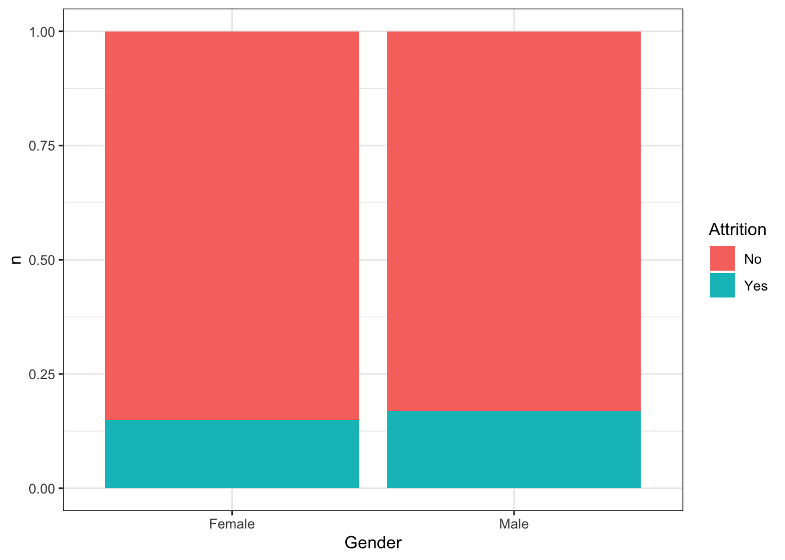
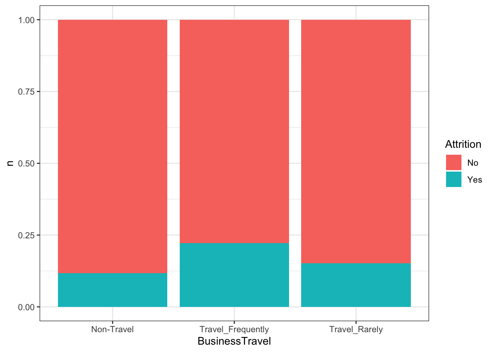
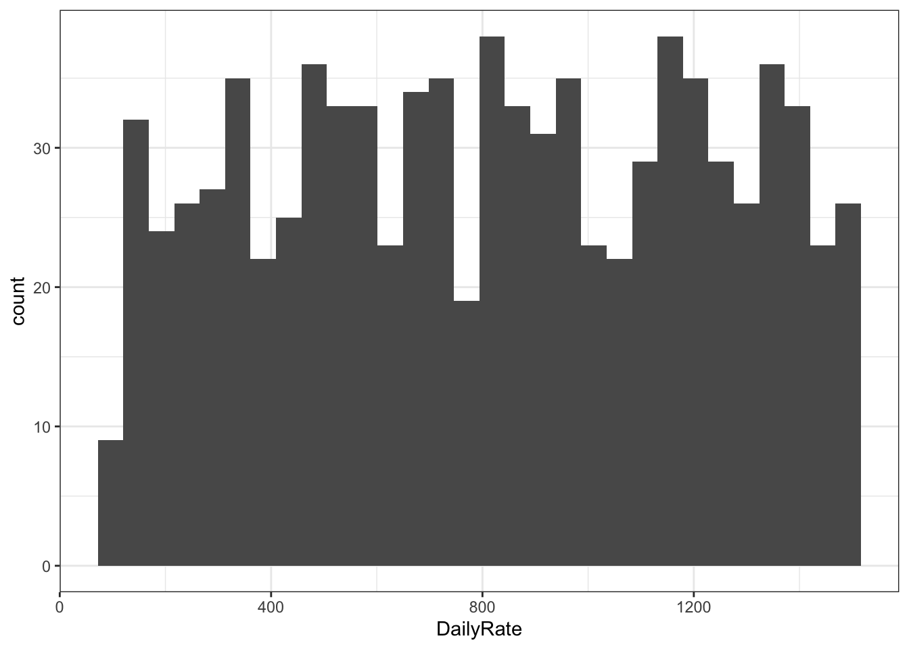
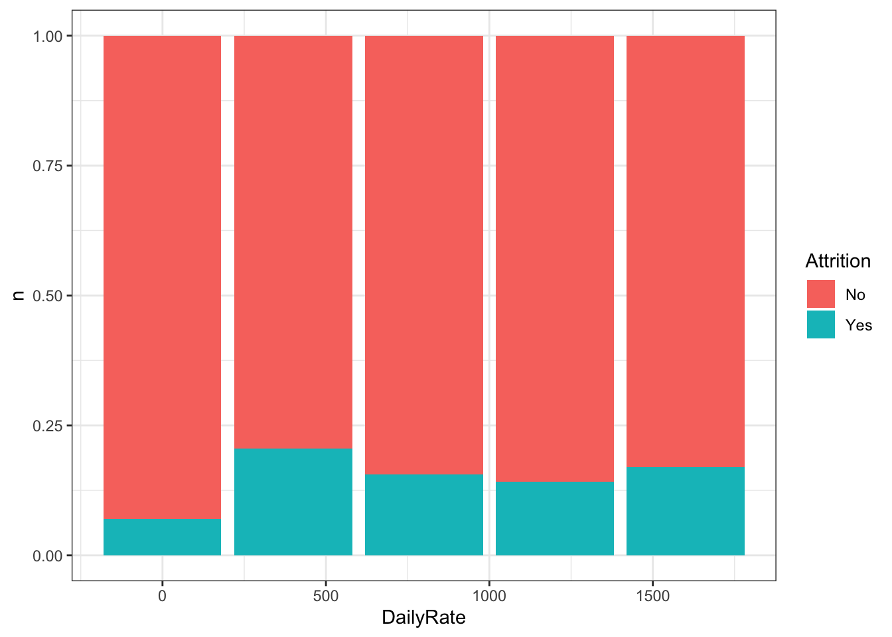
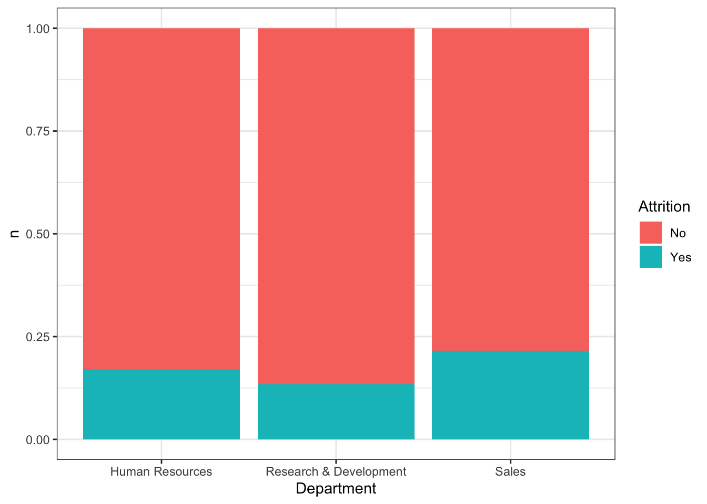
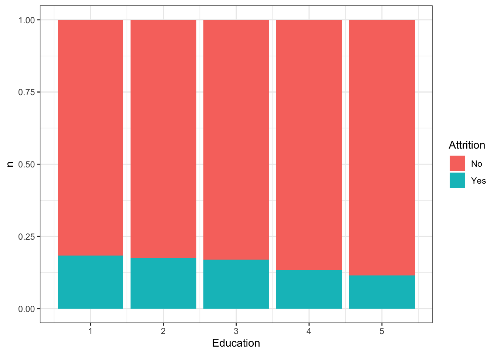
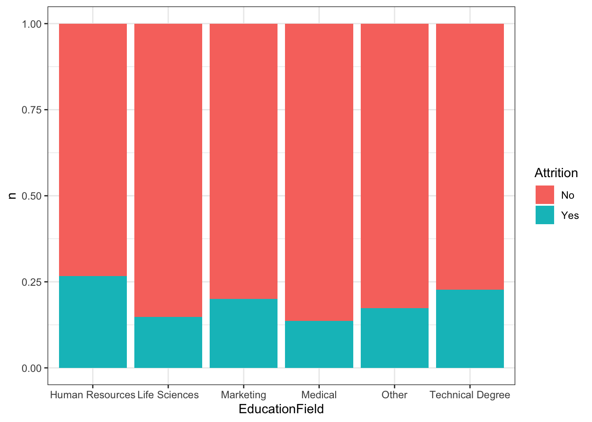
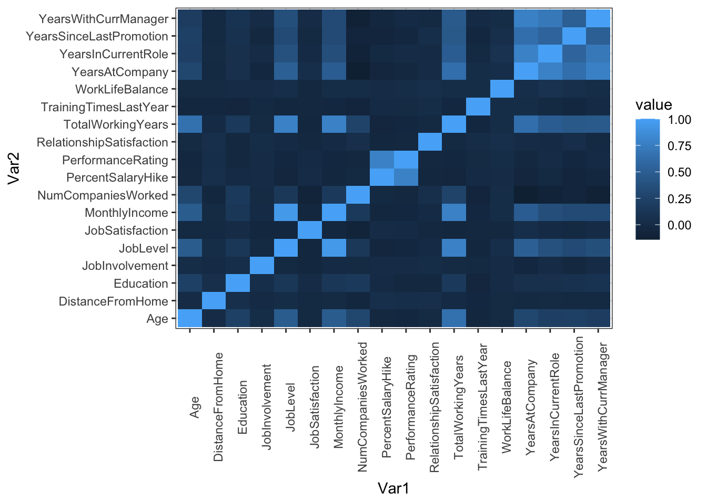

library(tidyverse)
library(class)
library(caret)
library(e1071)
theme_set(theme_bw())Factors Leading to Attrition
Introduction
The specific goals of this analysis are to:
1. Identify the top three factors that contribute to attrition (note, there may or may not be a need to create derived attributes/variables/features)
2. Learn about any job role specific trends that may exist in the data set (e.g., “Data Scientists have the highest job satisfaction”).
3. Provide any other interesting trends and observations from your analysis.
4. Build a model to predict attrition
Executive Summary
To be filled in
Libraries and Data Loading
employeeData = read_csv("/Users/andrewyule/Dropbox/Personal/SMU MSDS/03 - Doing Data Science/SMU_DDS_CaseStudy2/Data/CaseStudy2-data.csv")Identifying the top three factors that contribute to attrition
To start, how many of the 870 employees in the data actually left?
There is around 140 out of 870 employees that left.
employeeData |> count(Attrition)# A tibble: 2 × 2
Attrition n
<chr> <int>
1 No 730
2 Yes 140There are a number of variables that could attribute to employee attrition. We will try and quickly screen all of them to look for top factors to build a model around. Among the possible list are:
- Age
- Business Travel
- Daily Rate
- Department
- Distance From Home
- Education
- Education Field
- Environment Satisfaction
- Gender
- Hourly Rate
- Job Involvement
- Job Level
- Job Role
- Job Satisfaction
- Marital Status
- Monthly Income
- Monthly Rate
- Number of Previous Companies Worked For
- Over Time
- Percent Salary Hike
- Performance Rating
- Relationship Satisfaction
- Stock Options
- Total Working Years
- Training Times Last Year
- Work Life Balance
- Years At Company
- Years In Current Role
- Years Since Last Promotion
- Years With Current Manager
Is there any trends in attrition based on age grouped by 5 years?
Attrition looks to be slightly higher in people around 20 years of age.
employeeData |>
mutate(Age = round(Age/5)*5) |>
group_by(Age) |>
count(Attrition) |>
ggplot(aes(x = Age, y = n, fill = Attrition)) +
geom_col(position = "fill")
Is there any trends in attrition based on business travel?
There is a slightly higher attrition rate for those traveling frequently, decreasing as travel decreases
employeeData |>
group_by(BusinessTravel) |>
count(Attrition) |>
ggplot(aes(x = BusinessTravel, y = n, fill = Attrition)) +
geom_col(position = "fill")
Is there any trends in attrition based on daily rate grouped by 400 dollars?
Attrition looks to be slightly higher around the 400 dollar group, but consistent everywhere else
employeeData |>
ggplot(aes(x = DailyRate)) +
geom_histogram()`stat_bin()` using `bins = 30`. Pick better value with `binwidth`.
employeeData |>
mutate(DailyRate = round(DailyRate/400)*400) |>
group_by(DailyRate) |>
count(Attrition) |>
ggplot(aes(x = DailyRate, y = n, fill = Attrition)) +
geom_col(position = "fill")
Is there any trends in attrition based on department?
Nothing significant as far various departments having higher / lower attrition
employeeData |>
group_by(Department) |>
count(Attrition) |>
ggplot(aes(x = Department, y = n, fill = Attrition)) +
geom_col(position = "fill")
Is there any trends in attrition based on distance from home grouped by 5 miles?
Attrition looks to be significantly higher for people around 15 miles of distance traveled or higher
employeeData |>
ggplot(aes(x = DistanceFromHome)) +
geom_histogram()`stat_bin()` using `bins = 30`. Pick better value with `binwidth`.employeeData |>
mutate(DistanceFromHome = round(DistanceFromHome/5)*5) |>
group_by(DistanceFromHome) |>
count(Attrition) |>
ggplot(aes(x = DistanceFromHome, y = n, fill = Attrition)) +
geom_col(position = "fill")Is there any trends in attrition based on education?
Attrition decreases with education level consistently
employeeData |>
group_by(Education) |>
count(Attrition) |>
ggplot(aes(x = Education, y = n, fill = Attrition)) +
geom_col(position = "fill")
Is there any trends in attrition based on education field?
Attrition is slightly higher in HR followed by Technical Degree, then marketing
employeeData |>
group_by(EducationField) |>
count(Attrition) |>
ggplot(aes(x = EducationField, y = n, fill = Attrition)) +
geom_col(position = "fill")
Is there any preference for attrition between gender? The breakdown in preference between males and females looks to be insignificant
employeeData |>
group_by(Gender) |>
count(Attrition) |>
ggplot(aes(x = Gender, y = n, fill = Attrition)) +
geom_col(position = "fill")